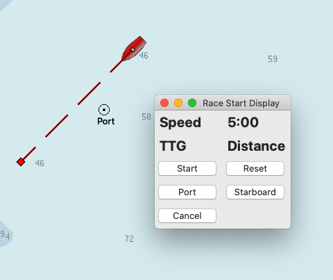
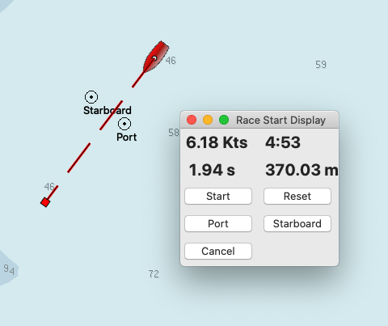

Race Start Display
by Steven Adler [Stevead]
A simple plugin to assist sailors with their race start.
Prior to the start, sail to each end of the start line and “ping” each end by pressing the port & starboard buttons respectively.

When the 5' gun sounds press the start button. The display will then display a 5' countdown timer, the boat’s speed over ground, and based on your current speed and heading, distance and time to the start line.

If you have any problems, please post questions on the OpenCPN forum or send an email to twocanplugin@hotmail.com